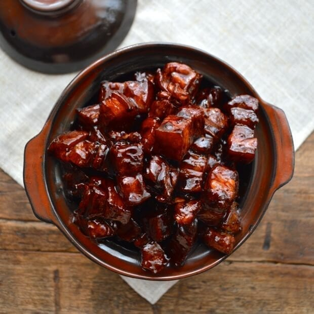
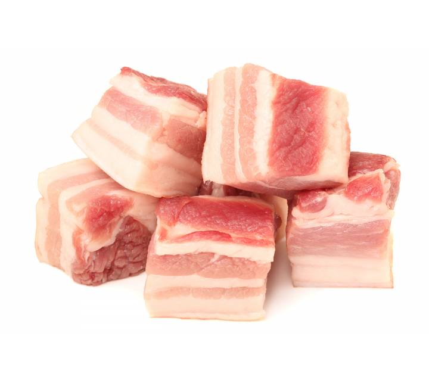
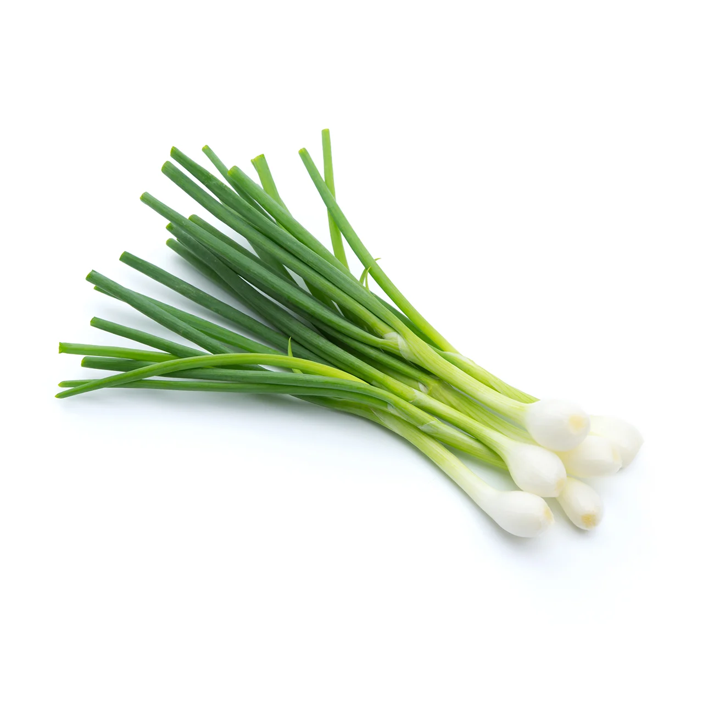

Haiyan's Chinese Braised Porkbelly
Ingredients
Serving Size: 4
Total time: 2.5 hours
Difficulty: Medium
- 2 large spring onions
- 2 star anise
- 1 knob of ginger
- 2 pieces of Cassia bark
- 1 teaspoon Sichuan pepper corns
- A small handful of dried hawthorns
- 3 lbs of Porkbelly (preferably with even, defined layers)
- 1/2 head of white onion
- 1/2 handful of Meigan cai (dried plum vegetables)
- 1/2 cup Cooking wine
- 1/3 cup Soy sauce for Shanghai braised dishes
- 1/4 cup Kimlan Lou Chou Soy Sauce
- 1/4 cup Kikkoman Soy Sauce
- 1/4 cup water
- 1/4 cup black cane sugar
Instructions
- Fill a large pot with water
- Cut porkbelly into medium-sized cubes
- Add porkbelly cubes into pot and heat until boiling to soak out blood
- In the meantime, slice onion, spring onions, and ginger
- Taking a second pot, line the bottom with onions, adding in the spring onions, ginger, star anise, dried hawthornes, Sichuan pepper corns, and Cassia bark
- Set the second pot on stove on simmer
- Soak Meigan cai in a small bowl of water
- Check on the porkbelly once it's boiling–if you see small hairs, take tweezers and pluck them out to the best of your ability
- Transfer porkbelly (no water) to the second pot, placing over the other ingredients.
- Pour cooking wine, Kimlan Lou Chou, Kikkoman over the porkbelly
- Pour water around the edges of the pot
- Add Meigan cai
- Cap the pot, keep on medium low heat for about 45 minutes
- Add black cane sugar and cook for another 30 minutes
- Eat your creation! If you have leftovers, store them in a sealed container in the fridge. Eat within one week.
Reference Images for Illustration



Illustration Style Moodboard
Behance Recipe Project Moodboard
Recipe Sites
- The Woks of Life
Good process photos specifically for Chinese Braised Porkbelly, and the introduction to history behind the dish was helpful for me just in terms of content research.
- Serious Eats
Allows you to jump straight to the recipe if you don't want to read the introduction. Margins could be a bit wider for the actual content, but I love the neobrutalist style and useful recipe elements (recipe facts, adding ingredients to shopping list). Also, they implement white space very nicely and have images for every step of the process!
- Food Republic
Their two column layout is really nice, and they make the ingredients list sticky so that you can see them while continuing to scroll through the directions. Not sure how well that would work on mobile, but it looks really nice for desktop users.
Non-Recipe Sites
- Kenkashi
Dynamic use of columns and fixed elements allows for a grounded yet visually engaging home page. A lot of these elements would apply nicely to a recipe page, where there are sections for introduction, ingredients, instructions, and reviews! It's also not overdesigned, so the content remains the focus of the website
- Home Societe
This website is unique in that vertical scrolling results in horizontal movement. I think it was wise to maintain vertical scrolling because that is a convention many of us are used to, but the horizontal movement makes the site more temporal, and I think a timeline like this would make for a great recipe site.
- Cook Collective Kitchen
I'm feeling inspired by a lot of one-page websites as I continue to explore, but I particularly love how this one still offers a fixed navigation menu at the top that can take you to various parts of the page. Moreover, their use of typographic scale and insertion of handdrawn doodles make the site feel fun and homey. I hope to emulate a similar tone in my recipe site.